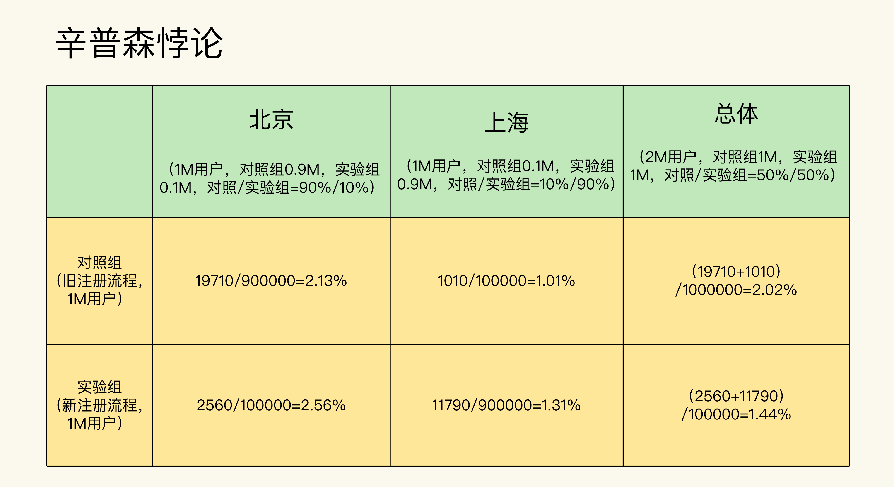
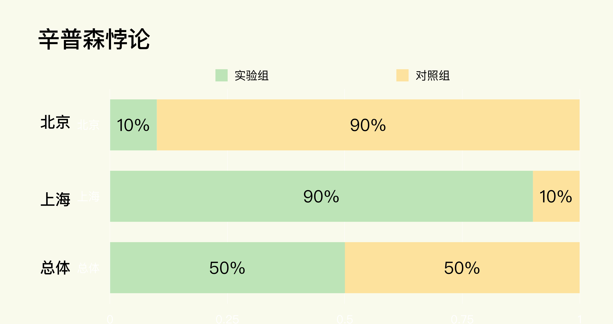
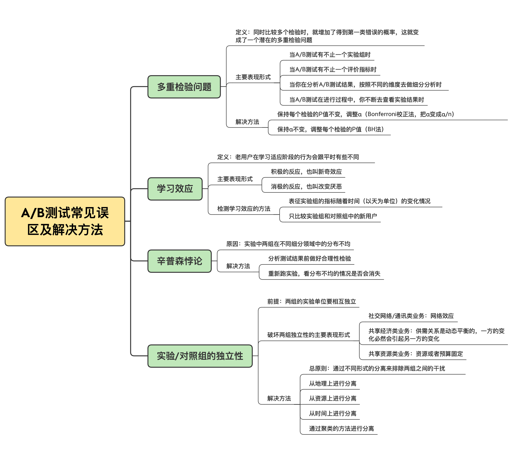

- 00 开篇词 用好A_B测试，你得这么学.md.html
- 01 统计基础（上）：系统掌握指标的统计属性.md.html
- 02 统计基础（下）：深入理解A_B测试中的假设检验.md.html
- 04 确定指标：指标这么多，到底如何来选择？.md.html
- 05 选取实验单位：什么样的实验单位是合适的？.md.html
- 06 选择实验样本量：样本量越多越好吗？.md.html
- 07 分析测试结果：你得到的测试结果真的靠谱吗？.md.html
- 08 案例串讲：从0开始，搭建一个规范的A_B测试框架.md.html
- 09 测试结果不显著，要怎么改善？.md.html
- 10 常见误区及解决方法（上）：多重检验问题和学习效应.md.html
- 11 常见误区及解决方法（下）：辛普森悖论和实验组_对照组的独立性.md.html
- 12 什么情况下不适合做A_B测试？.md.html
- 13 融会贯通：A_B测试面试必知必会（上）.md.html
- 14 举一反三：A_B测试面试必知必会（下）.md.html
- 15 用R_Shiny，教你制作一个样本量计算器.md.html
- 加餐 试验意识改变决策模式，推动业务增长.md.html
- 导读 科学、规范的A_B测试流程，是什么样的？.md.html
- 结束语 实践是检验真理的唯一标准.md.html
- 捐赠
11 常见误区及解决方法（下）：辛普森悖论和实验组_对照组的独立性
你好，我是博伟。这节课，我们继续来学习A/B测试中的常见误区和解决方法。
今天我们要解决的问题，是辛普森悖论和实验/对照组的独立性。这两个问题在A/B测试的实践中也是常客。
对于辛普森悖论呢，由于遇到的次数太多，以至于我每次做A/B测试结果的细分分析时，都要先检查该细分领域在两组的比例是否符合两组整体的比例，来确保实验结果的准确。
对于实验/对照组独立性被破坏这个问题，我在早期做营销预算固定的A/B测试时也经常遇到，但是它的表现形式其实非常多变，各个业务类型中都有它的身影，所以就需要有针对性地进行分析。
听了我的经历，你可能还是不太明白这两个问题到底是什么，它们对A/B测试有什么影响，不用担心，今天我就会为你深度剖析，带你在实践中去识别它们，并解决它们！
辛普森悖论
听到“辛普森悖论”这个概念，你可能会有点迷茫，不知道它具体说的是什么问题。所以我还是先用音乐App来举个例子，告诉你辛普森悖论是什么，以及它在A/B测试中到底指的是什么。
一款音乐App优化了新用户的注册流程，并且希望通过A/B测试在北京、上海这两个主要的市场来验证优化注册后的转化率是否有所提升。
- 实验组：使用优化后的注册流程。
- 对照组：使用原有的注册流程。
在设计好了实验之后，实验组和对照组的样本量均分。等跑完实验，获得了足够的实验样本之后，结果得到实验组的转化率为1.44%， 对照组的转化率为2.02%。
这就很让人意外了，为什么实验组（使用优化后的注册流程）的转化率，反而比对照组（使用原有的注册流程）的转化率要低呢？
而且更让人意外的是，当你在分别分析北京和上海这两个市场时，会发现它们的实验组转化率都比对照组的要高。

在确认了数据和计算没有错误后，你的本能反应可能会是：同样的数据，我在进行总体分析和细分分析时得出的结果却完全相反，这怎么可能呢！
这就是在数学理论中很有名的辛普森悖论，它是指当多组数据内部组成分布不均匀时，从总体上比较多组数据和分别在每个细分领域中比较多组数据可能会得出相反的结论。在数学上，它的形式要更加抽象：即使 \(\\frac{a}{b}<\\frac{A}{B}, \\frac{c}{d}<\\frac{C}{D}\)，那么\(\\frac{a+c}{b+d}>\\frac{A+C}{B+D}\)也是可能成立的。
真是奇怪了，这个有些反直觉的现象，在数学上竟然是完全可以成立的。而这种不可思议的现象，也出现在了A/B测试中。
究其原因，在这个例子当中，其实是因为实验组和对照组虽然在总体上实现了我们在设计实验时要求的样本量均分。但是在北京和上海这两个细分市场中却分布不均匀，没有实现样本量均分。- - 关于细分分析，我也再补充一下。在A/B测试的实践中，我们一般根据市场（不同的城市、国家等），设备类型（手机、桌面、平板等），用户的互动或者花费程度（轻度、中度、重度等）来进行细分分析。
好了，还是回到我们的案例当中。如果你对基础篇的内容掌握得足够扎实，就会发现我们在第7节课中讲分析结果前的合理性检验时，其中有一项就是检验实验/对照组中特征的分布，意思是说要检验两组中的特征分布是否相似，是否符合实验设计要求的比例分布。
所以，咱们今天讲的辛普森悖论，实际上就是由于实验中两组在不同细分领域中的分布不均造成的。
当然，在音乐App这个例子中只有两个细分领域。如果是多个细分领域，比如要在全国几十个大城市进行A/B测试，那么只要是实验组和对照组在任何一个细分领域的分布与实验设计的不相符时，都有可能出现辛普森悖论。
所以，既然辛普森悖论是我们做A/B测试时需要规避的问题/现象，那有没有合适的解决方案呢？
其实，解决一个问题的最好方法就是减少或者避免它的产生。就像我刚才说的，辛普森悖论是两组在不同细分领域中的分布不均造成的。想想看，如果我们在分析测试结果前做好了合理性检验，那出现辛普森悖论的几率就会大大减小。
不过，如果在分析结果前我们没有做好合理性检验，那还有别的办法可以解决吗？
当然有，不过会比较麻烦。如果我们在进行总体分析和细分分析时发现了辛普森悖论，最好的解决办法就是重新跑实验，看看两组在不同细分领域的分布不均会不会消失。
如果分布不均的情况还是没有消失，那就说明这很可能不是偶然事件。这个时候就要检查看看是不是工程或者实施层面出现了问题，由此造成了分布的不均匀。如果是工程层面出现了问题，那就要有针对性地去解决。
当然如果时间比较紧迫，没有时间重新跑实验和检查问题的原因，那么就以细分领域的结果为准，因为总体结果出现了辛普森悖论会变得不准确。不过这里因为是比较细分领域，会出现多重检验问题，要用我们上节课讲的方式做相应的处理。
好啦，现在你对辛普森悖论的理解肯定比之前更深刻了，那么我们接下来聊聊实验组和对照组的独立性这个问题。
实验组和对照组要相互独立
首先要说明的是，A/B测试有一个前提：*实验组和对照组的实验单位是要相互独立的，意思是说测试中各组实验单位的行为仅受本组体验的影响，不能受其他组的影响*。这个前提又叫做Stable Unit Treatment Value Assumption （SUTVA）。
针对实验组与对照组保持独立的问题，可能很多人都会觉得：这有什么好说的，都分成两个组了，肯定是各自独立的啊！在实践中还真不是这样的。我们在做A/B测试时，经常会在不知不觉中，因为实践中碰到了一些业务场景，导致检验两组的独立性被破坏了，而这就会破坏实验结果的准确性。
这还是因为A/B测试的本质是因果推断，所以只有在实验组和对照组相互独立，互不干扰的情况下，如果测试结果有显著的不同，那么才能把这个显著不同归因成实验组相对于对照组的变化，否则就很难建立准确的因果关系。
这么说你可能理解得还不够深刻，下面我就结合具体的业务场景，来看下在A/B测试中，两组实验单位的独立性都是如何被破坏的。
破坏两组独立性的表现形式有哪些？
在A/B测试中，两组的独立性被破坏主要表现在社交网络/通讯，共享经济以及共享资源这三类业务上，下面就让我来为你一一讲解。
第一类业务是社交网络/通讯类业务。
这类业务主要是用户之间的交流和信息交换，典型代表包括微信、微博、领英（Linkedin）、语音/视频通讯、电子邮件，等等。
在这类业务中，会存在网络效应。网络效应也就是网络中相邻的各个节点会相互影响。如果节点A在实验组，而它相邻的节点B在对照组，这时候两者就不是独立的。
我举个例子来帮助你理解。某社交App改进了信息流的推荐算法，通过推荐给用户更相关的内容来增加用户的互动，现在呢，我们想通过A/B测试来检测算法改进的效果。
- 对照组：使用旧算法。
- 实验组：使用改进后的新算法。
- 评价指标：用户的平均使用时间。
这样我们就可以做个假设：实验组的用户A体验到了改进后的新算法，看到了更多喜欢的内容，就花了更多的时间在这个App上，同时也在App中分享了更多有趣的内容，和朋友有了更多的互动。而他的好友用户B恰巧在对照组，那么当B看到A分享的内容和互动后，可能也会花更多的时间在App中浏览，并且参与到和A的互动当中，即使B并没有体验到改进后的算法。
这就是一个典型的A/B测试中网络效应的例子。在实验组的用户A会因为A/B测试中的变化而改变使用行为，并且这个行为上的改变会通过网络效应传递给在对照组的好友B，从而改变了用户B的使用行为，这就使得对照组也间接受到了实验组中新算法的影响。
这显然违背了我们在对照组给用户旧算法体验的实验设计，所以测试结果很可能是两组的指标都升高，造成结果不准确。
第二类业务是共享经济类业务。
共享经济类业务一般是双边市场（Two-Sided Market），即公司只提供交易平台，供给方和需求方均是用户。典型代表包括淘宝、滴滴、Uber、共享单车、共享租赁、爱彼迎(Airbnb)，等等。在这类业务中，由于供需关系是动态平衡的，一方的变化必然会引起另一方的变化，从而造成实验中两组相互影响。
比如说，我们在用A/B测试验证不同的优化是否有效时，往往只能一次验证一个优化。如果我们用A/B测试检验一个需求侧的优化，就要在需求侧分成实验组和对照组，这样实验组由于受到了优化，就会导致需求增加。那么在供给一定的情况下，更多的供给流向了实验组，就会造成对照组的供给减少，对照组的用户体验会变得更差，从而进一步打击对照组的需求。
我给你举个例子，假设某共享打车服务优化了用户在App中的打车流程，现在我们要通过A/B测试来验证这个优化是否有效果。
这里，实验组依然是使用优化流程，对照组则使用旧流程。实验组的用户因为流程的优化，打车更加方便，吸引了更多的司机。而由于司机的数量是稳定的，这就会导致可供对照组选择的司机减少，对照组的用户更难打到车，用户体验变差，那么通过A/B测试得出的流程优化的效果相比较对照组就会被高估。
第三类业务是共享资源类业务。
有些共享资源类业务有固定的资源或者预算，最常见的就是广告营销了。
在营销预算固定的情况下，我们用A/B测试来验证不同广告的效果。如果发现我们在实验组改进后的广告效果更好，点击率更高，那么这就会造成对照组的广告预算减少，从而影响到对照组的广告效果。因为线上的广告大部分是按点击次数付费的，所以这时候实验组广告花的钱就越多，在营销预算固定的情况下就会抢占对照组的预算。以此来看，通过A/B测试得出的实验组的广告效果就会被高估。
如何避免破坏两组的独立性？
那么，从我刚才讲的三类业务中你也能看出来，在实际业务场景中，由于违反两组实验单位独立性的表现形式和原因有很多，所以也会有不同的方法来解决，不过总的原则就是通过不同形式的分离来排除两组之间的干扰。具体而言，主要有以下4种分离方法：
第一种方法是从地理上进行分离。
这类方法主要适用于受到地理位置影响的线下服务，比如共享出行和共享租赁，这种本地化的服务一般不同的地域之间不会有干扰，这时候就可以按照不同的市场来分类。
最常用的是从城市这个维度进行分类。比如把北京的用户作为实验组，把上海的用户作为对照组，这样就可以排除两组间的干扰。需要注意的是，这里选取的不同市场要尽量相似，具有可比较性。我所说的相似，包括但不限于：该项业务在当地的发展情况，当地的经济状况，人口分布情况等等。
第二种方法是从资源上进行分离。
这类方法主要适用于由于共享资源造成的两组之间的干扰。具体操作就是A/B测试中每组的资源分配比例要和每组样本量的比例一致。比如在做广告营销中，如果通过A/B测试比较不同组的广告的效果，那么每组分配的广告预算的比例要和每组的样本量比例相等，比如两组样本量均分时，广告预算也要均分，这样两组之间的广告预算才能互不干扰。
第三种方法是从时间上进行分离。
这类方法主要适用于不易被用户察觉的变化上，比如算法的改进。这类方法的原理就是实验组和对照组都是同一组用户，在一段时间内实施变化，给他们实验组的体验，然后在另一段时间内不实施变化，给他们对照组的体验。
需要注意的是，这个时间段的单位可以是分钟、小时或者天，这样的话因为在同一时间内所有的实验单位都属于同一组，也就不存在不同组之间的干扰了。不过用这种方法时要特别注意用户的行为可能会在每天的不同时段，或者周中/周末有所波动。如果有周期性波动的话，就要在比较时尽量在不同周期的同一个阶段进行比较，比如只把周中和周中比较，周末和周末比较，但是不能把周中和周末比较。
第四种方法是通过聚类（Clustering）的方法进行分离。
这种方法主要适应于社交网络类业务。社交网络中用户之间的连接其实也不是均匀的，有远近亲疏，那就可以通过模型的方法，根据不同用户之间交流的程度来分离出不同集群cluster，每个cluster都会有不同的联系很紧密的用户，我们可以把每个cluster作为实验单位随机分组，这样就能从一定程度上减少不同组之间的干扰。
这种方法比较复杂，实施难度大，需要数据模型和工程团队的支持，有兴趣的话可以参考Google和Linkedin的经验。
小结
在这节课，我具体讲解了辛普森悖论和实验/对照组的独立性这两个常见的实验误区，以及在实践中的常用解决办法。相信通过这节课的学习，你能够在实践中及时发现并解决它们。
另外啊，我把这两节误区系列的内容呢也总结成了一张图，放在了文稿里，你可以保存下来，方便之后的复习与巩固。- 
到这里，我们的常见实验误区系列就告一段落了，通过这两节课的学习，你也体会到了我在讲课时不断说的，真实业务场景的复杂多变，潜在的各种各样的坑，这些误区和问题其实都是通过一次次A/B测试去积累试错得出的，所以就更加体现出了实践在A/B测试中的重要性。
如果你能在A/B测试中及时识别和解决这些常见的潜在的误区，不仅能为公司挽回潜在的损失，获得持续的增长，也是区别你和A/B测试新手的重要标志。
思考题
结合自己的经验，想一想过去有没有在A/B测试中遇到辛普森悖论和实验/对照组的独立性被破坏的情况？以及当时是如何处理的呢？
欢迎把你的思考和收获分享在留言区，我们一起学习、讨论。如果这两节的误区系列帮你解答了一些疑难问题，也欢迎你把课程分享给你的同事、好友。我们下节课再见。
© 2019 - 2023 Liangliang Lee. Powered by gin and hexo-theme-book.